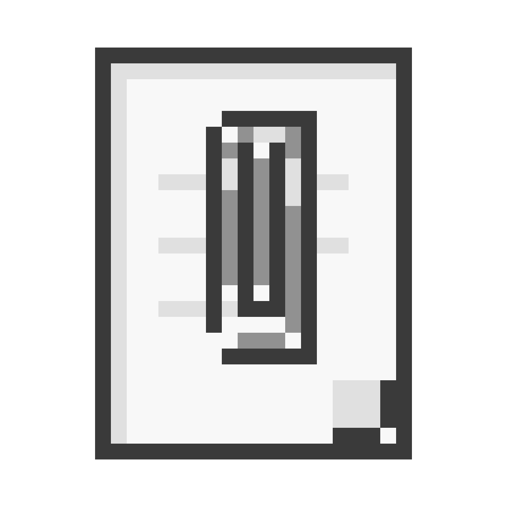

HOW IT WORKS
- Login with GitHub.
- Pick or create your notes repo.
- Write Markdown, diagrams, tables, tasks.
- Sync everywhere through Git.

OPEN SOURCE / GIT NOTES / CLIENT SIDE
Free, private GitHub notes. No backend. No subscription. ChatGPT integrated.
AI CONNECTOR
Open the Notit GPT, connect GitHub, and read your notes from your own repository.
Default notes path: notes/*.md
Tired of Obsidian? This is the way. Free multidevice sync. Your theme. Your platform.
HOW IT WORKS
FEATURES